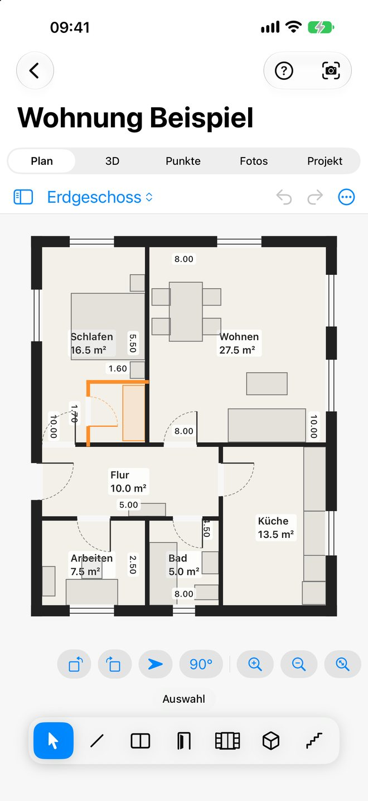
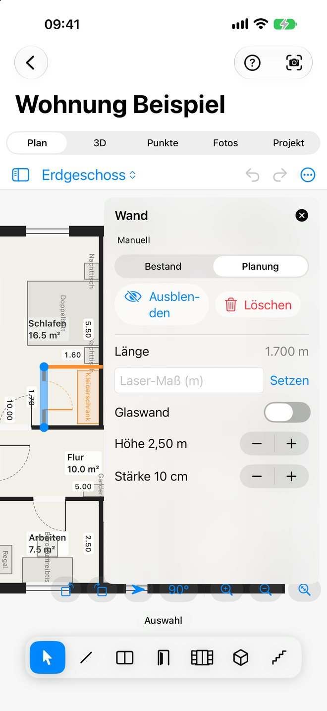
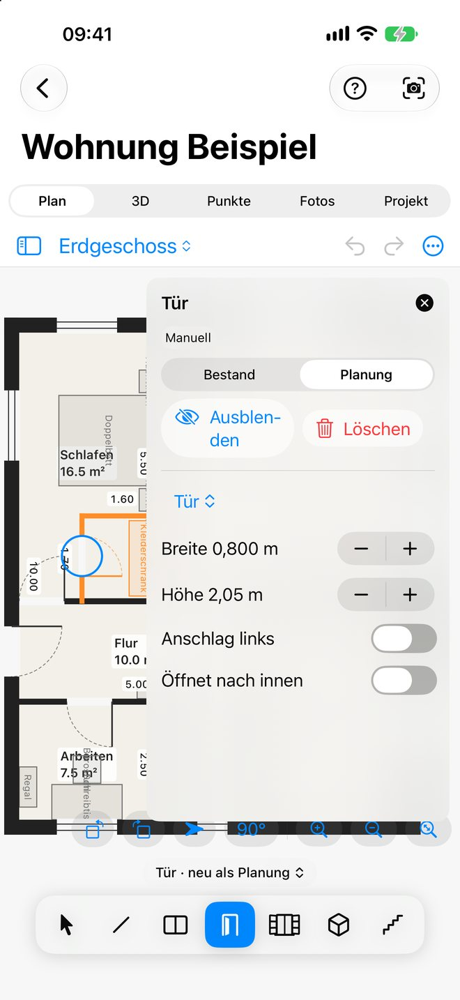
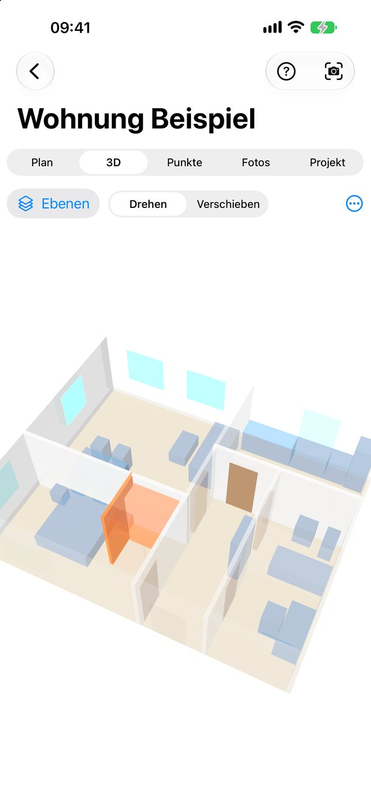

Räume scannen.
Grundriss planen.
RaumPlan macht aus einem LiDAR-Scan mit dem iPhone Pro einen Grundriss, den du korrigieren und bearbeiten kannst. Am iPhone, am Mac und auf der Apple Vision Pro.
- Kostenlos
- Ohne Konto
- Ohne Werbung
- Keine Datenerhebung


So sieht RaumPlan aus
Aufnahmen aus der App mit einer Beispielwohnung.


Vom Scan zum Plan
RaumPlan ist für alle, die eine Wohnung oder ein Haus erfassen und umplanen wollen: beim Umzug, bei der Renovierung oder einfach, um endlich einen aktuellen Grundriss zu haben.
Scannen mit LiDAR
Geh mit dem iPhone Pro an den Wänden entlang. RaumPlan erkennt Wände, Türen, Fenster und Möbel und fügt mehrere Räume zu einem Geschoss zusammen.
Mit Fotos oder nur LiDAR
Das Speichern von Fotos lässt sich ein- und ausschalten. Gespeicherte Fotos kannst du später mit einem Tipp aus dem Projekt löschen, Plan und Maße bleiben.
Korrigieren und planen
Der Scan bleibt unverändert, deine Änderungen liegen in einer eigenen Ebene darüber. Wände und Glaswände zeichnen, Türen und Fenster einrasten, Objekte setzen, Maße per Laser-Wert korrigieren. Neues ist als Planung markiert.
3D und Punktwolke
Sieh den Plan als 3D-Modell mit durchsichtigen Vorderwänden, das gescannte Mesh und die Punktwolke, eingefärbt nach Foto, Typ oder Höhe.
Am Mac weiterarbeiten
Den Plan auf dem großen Bildschirm bearbeiten, Bodenbild und hochaufgelöste Panoramen aus den Fotos berechnen und alles exportieren.
Auf der Apple Vision Pro
Das Gebäude als Puppenhaus auf dem Tisch, ein Rundgang durch die Panoramen und der Plan in Originalgröße über dem echten Raum.
Auf allen Geräten
Projekte in iCloud Drive erscheinen von selbst auf iPhone, iPad, Mac und Vision Pro. Ein Gerät bearbeitet, die anderen sehen die Änderungen nach wenigen Sekunden.
Offene Formate
SVG im Maßstab 1:50 oder 1:100, DXF für CAD-Programme, JSON, Punktwolke als PLY und Mesh als OBJ. Ein Projekt ist ein normaler Ordner.
Deine Daten bleiben bei dir
Kein Konto, keine Werbung, keine Analyse. RaumPlan sendet nichts an den Entwickler. Alles liegt auf deinem Gerät oder in deinem eigenen iCloud Drive.
Aufbereiten am Mac
- Punktwolke aus den Aufnahmen, gefiltert nach dem bereinigten Plan: ohne Möbel, ohne Punkte außerhalb der Räume
- Bodenbild als Draufsicht unter dem Grundriss
- Panoramen in hoher Auflösung für den Rundgang
- Export als SVG, DXF, JSON, PLY und OBJ
Begehen auf der Apple Vision Pro
- Puppenhaus: das ganze Geschoss als Modell im Raum, greifen und drehen
- Rundgang: von Standpunkt zu Standpunkt durch die Panoramen springen
- Vor Ort: den Plan 1:1 über den echten Raum legen und geplante Wände dort sehen, wo sie stehen würden
Was du brauchst
| Gerät | Was geht | Ab |
|---|---|---|
| iPhone Pro, iPad Pro mit LiDAR | Scannen, Plan bearbeiten, 3D, Punktwolke | iOS / iPadOS 18 |
| Andere iPhones und iPads | Plan ansehen und bearbeiten, ohne Scan | iOS / iPadOS 18 |
| Mac | Bearbeiten, Aufbereiten, Export | macOS 15 |
| Apple Vision Pro | Puppenhaus, Rundgang, Vor-Ort-Ansicht | visionOS 26 |
Ein Hobbyprojekt
RaumPlan entsteht in meiner Freizeit, nicht in einer Firma. Ich baue die App so, wie ich sie selbst gern hätte. Manche Funktionen sind deshalb im Moment „gut genug“ und bleiben erst einmal so, statt bis ins letzte Detail ausgefeilt zu sein.
Über Rückmeldungen freue ich mich trotzdem sehr: was dir gefällt, was fehlt und was nervt. Besonders hilfreich sind Fehlermeldungen. Schreib kurz, auf welchem Gerät es passiert ist und was du gerade gemacht hast, dann kann ich den Fehler nachstellen.